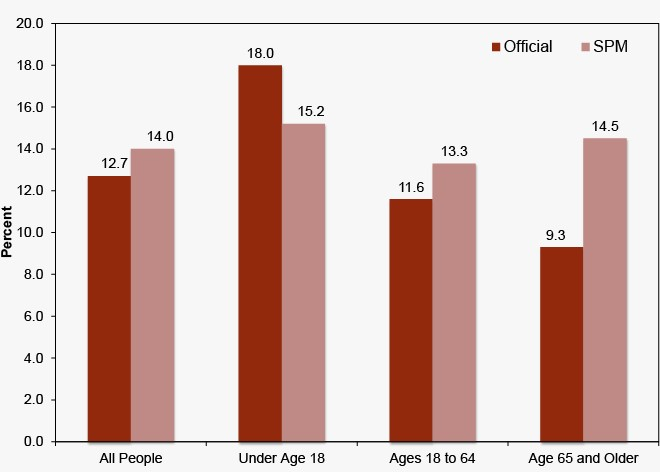

How Is Poverty Measured?
This method of calculating poverty takes into account the fact that a constant percentage of family spending goes towards food. The value of staple food items is multiplied by the inverse of the percentage that food expense represents as a percentage of overall expenditure to determine the poverty line.
The official poverty measure (OPM), developed by the Census Bureau, compares pre-tax cash income to a cutoff that was established at three times the price of a minimum food diet in 1963 and adjusted for family size.
To determine what proportion of the populace is poor, the OPM computes these three factors: income, threshold, and family.
The Current Population Survey Annual Social and Economic Supplement (CPS ASEC), which is performed in February, March, and April with a sample of roughly 100,000 addresses per year, is where the official poverty figures are derived.
The latest year for which statistics are available is 2016, when the national OPM poverty rate was 12.7%. 40.6 million individuals lived in poverty.
